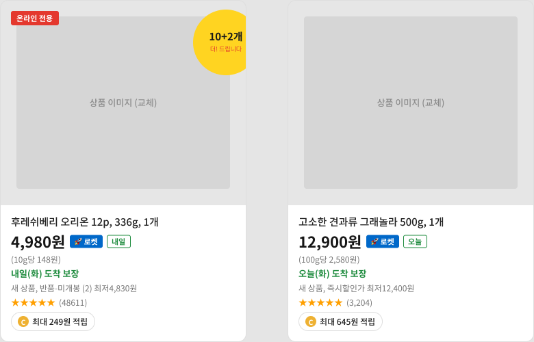
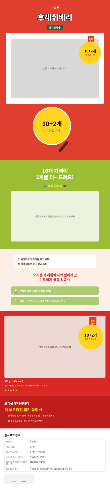

PROOF · SMARTSTORE MCP WORKBOOKPRACTICE EXAMPLES
5차시 실습 예제
각 예제에 권장 대응 플랫폼과 트렌드 포인트를 표기했다 (08_플랫폼별_상세페이지_제작가이드.md, 09_상세페이지_트렌드_2026_취업시장.md 참고).
예제 A — 식품/베이커리
과제
20~40대 직장인이 모바일에서 빠르게 제품의 맛과 장점을 이해하도록 상세페이지를 설계한다.
핵심 데이터
- 제품: 간편하게 즐기는 베이커리
- 구매상황: 아침/간식/선물
- 핵심 가치: 간편성 + 맛 + 브랜드 감성
- 필요한 근거: 원재료, 중량, 보관법, 배송/포장 정보
산출물
Hero + Benefit + Ingredient + How-to + Spec + FAQ + CTA
권장 대응 플랫폼
네이버(기본) + 쿠팡(포장/배송 정보가 명확해 이미지 나열형과 궁합이 좋음)
트렌드 포인트
숏폼(트렌드1): 포장 개봉 → 시식 장면 5초 컷 자리 설계
예제 B — 생활용품
과제
"사용 전/사용 후"가 명확한 생활용품의 문제 해결형 상세페이지를 제작한다.
핵심 구조
Problem → Before → Solution → Feature → After → How-to → Spec
권장 대응 플랫폼
네이버(기본) + 카페24(Before/After를 스크롤 인터랙션으로 구현하기 좋은 구조)
트렌드 포인트
인터랙티브 스크롤(트렌드2): Before→After 전환 지점을 스크롤 트리거로 설계
예제 C — 패션 액세서리
과제
제품의 디자인/소재/착용성을 중심으로 감성 + 정보형 상세페이지를 만든다.
핵심 구조
Mood → Product → Detail → Styling → Material → Size → Care → FAQ
권장 대응 플랫폼
네이버(기본) + 쿠팡(사이즈/소재 정보를 이미지 나열형에 압축하는 훈련)
트렌드 포인트
미니멀리즘(트렌드4): Mood 섹션은 여백을 최대한 활용, 텍스트 최소화
예제 D — 브랜드 굿즈
과제
브랜드 세계관과 제품 구매 이유를 동시에 전달한다.
핵심 구조
Brand Story → Product Story → Design Detail → Collection → Spec → CTA
권장 대응 플랫폼
카페24(브랜드 스토리를 자유 레이아웃으로 풀기 좋음) + 네이버(기본)
트렌드 포인트
발견형 구매(트렌드5): SNS에서 우연히 발견해 들어오는 유입을 가정해 Hero에서 브랜드 세계관을 먼저 보여준다
예제 E — 학생 자기주도 프로젝트
학생이 실제 브랜드/가상의 브랜드를 선택한다.
조건
- 경쟁 상품 3개 이상 분석
- 구매자 1명 정의
- USP 3개 도출
- 8개 이상 섹션 제작
- Claude 작업 로그 저장 (MCP 사용 시 MCP 로그 포함)
- Figma 원본 공개 가능 상태로 정리
- 포트폴리오 케이스 스터디 작성
- (신규) WORK 00에서 선택한 플랫폼 조합에 맞춰 최소 1개 플랫폼은 규격까지 맞춰 완성
평가
전략 20 / 콘텐츠 15 / 정보구조 20 / 비주얼 25 / UX 10 / 포트폴리오 10
예제 F — 3플랫폼 동시 대응 (신규, 고급/포트폴리오 완성 단계용)
과제
예제 A~E 중 완성한 상품 하나를 골라 네이버·쿠팡·카페24 3개 버전으로 재구성한다. 새로 기획하지 않고 기존 콘텐츠를 각 플랫폼 규칙에 맞게 재배치하는 능력을 증명하는 것이 목표.
조건
- 네이버: 가로 860px 기준, 검색 키워드가 상단에 보이는 구성 유지
- 쿠팡: 가로 1000px 이하 / 세로 3000px 단위 분할, 정보 압축
- 카페24: HTML 퍼블리싱까지 진행, 인터랙션 최소 1개 이상 구현
- 3개 버전의 차이점을 표로 정리해 포트폴리오에 포함 (
08_플랫폼별_상세페이지_제작가이드.md 비교표 형식 참고)
평가 관점
"같은 콘텐츠를 플랫폼 규칙에 맞게 얼마나 빠르고 정확하게 재구성했는가" — 실무에서 가장 자주 발생하는 업무 유형이므로 포트폴리오 임팩트가 크다.
예제 G — 실전 사례: 오리온 후레쉬베리 (Claude+Figma MCP 실제 작업 결과)
가상 과제가 아니라 이 교안 제작 과정에서 실제로 Figma MCP를 연결해 만든 완성 사례다. 학생들에게 "이 정도 결과물이 나온다"를 보여주는 참고용 레퍼런스로 활용한다.

쿠팡 상품 리스트 카드 컴포넌트 (왼쪽 원본 / 오른쪽은 속성만 바꿔 만든 다른 상품 인스턴스)

19개 섹션으로 재현한 쿠팡 상세페이지 전체 (마케팅 배너 6종 + 플랫폼 UI 13종)
진행 순서 (실제로 밟은 단계)
- 쿠팡 실제 판매 페이지(오리온 후레쉬베리) 캡처 이미지를 레퍼런스로 입력
- 쿠팡 상품 리스트 카드를 재사용 가능한 Figma 컴포넌트로 제작 — Title/Price/배송뱃지 등 텍스트 속성 10개 + 배지 노출 Boolean 속성 4개를 연결해, 인스턴스 하나로 다른 상품("그래놀라")으로 완전히 바뀌는 것까지 검증
- 쿠팡 상세페이지 전체(19개 섹션 — 네비/구매박스/마케팅배너 6종/리뷰/Q&A/배송정보/관련상품/푸터)를 실제 판매 페이지 캡처본 그대로 Figma에 재현
- 작업 중 발견한 버그(오토레이아웃 기본 흰색 배경이 텍스트를 가리는 문제)를 스크린샷 검수로 잡아내고 수정
그대로 따라 하면 안 되는 부분 (교육 포인트)
- 실제 상품 사진은 가져올 수 없어 회색 placeholder로 대체 — 학생 실습에서도 이미지 소스가 없을 때 레이아웃을 placeholder로 먼저 완성하고 나중에 교체하는 순서가 정상적인 작업 방식임을 보여주는 사례
- 리뷰/Q&A의 실제 고객 이름·후기 원문은 옮기지 않고 "구매자1/2", "(예시 리뷰)"로 대체 — 템플릿을 배포/재사용할 때 타인의 개인정보나 후기 원문을 그대로 담으면 안 된다는 실무 원칙을 학생에게 반드시 짚어준다
- 워터마크가 있는 일러스트/장식 배경(물결무늬, 딸기 그림 등)은 벡터로 직접 그리는 대신 단색 배경으로 단순화 — MCP로 모든 걸 완벽 복제하려 하지 말고 구조·텍스트·색상은 정확히, 순수 장식 요소는 합리적으로 생략하는 판단 기준을 보여준다
조건 (학생이 이 사례를 따라 할 때)
- 실제 판매 중인 상품 페이지 1개를 레퍼런스로 캡처(전체 스크롤 캡처 권장 — PDF/이미지 도구 활용)
- 마케팅 배너 섹션(Hero~Spec)과 플랫폼 UI 섹션(구매박스, 리뷰, Q&A 등)을 구분해서 우선순위를 정한다 — 마케팅 배너가 디자이너의 실제 작업 범위, 플랫폼 UI는 구조 학습용
- 리뷰/Q&A 등 실제 사용자 콘텐츠가 포함된 영역은 반드시 placeholder로 대체
- Figma MCP 작업 중 발생한 버그와 해결 과정을 작업 로그에 남긴다(
05_자기주도학습_포트폴리오_가이드.md의 AI 작업 로그 STEP 03과 동일한 형식)
평가 관점
완벽한 복제가 아니라 "무엇을 정확히 재현하고, 무엇을 합리적으로 생략/대체했는가"에 대한 판단 근거 — 이 판단력이 곧 포트폴리오 케이스 스터디의 핵심 서술이 된다.